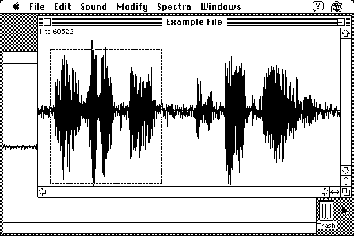

Download
soundhandle1.03.zip (119K) SoundHandle 1.0.3 repackaged into a zipped hfs disk image and checksum file. The disk image can be mounted with Mini vMac.
soundhandle1.03.sit.hqx (156K) SoundHandle 1.0.3 in the original format.
copyright: Dale Veeneman
mod date: Mar 12, 1995
license: free for non-commercial use
Allows you to "play, display, analyze, modify and save sound samples. You can also generate waveforms, read 'snd ' resources from other applications, save sounds as System 7 sound files and convert sounds to and from AIFF and ASCII text files. The application operates somewhat like a text editor, allowing you to cut and paste portions of sounds at will (including between multiple windows)." It "requires System 7", and "supports 8-bit, monophonic sounds."

If you find these downloads useful, please consider helping the Gryphel Project, which hosts them.
Here are the md5 checksums for the downloads, signed with Gryphel Key 5:
--------- GRY SIGNED TEXT --------- ef97d09a4d80d114fdf7180523b5c935 soundhandle1.03.zip 0f2371f474603d708d106e9520c7d622 soundhandle1.03.sit.hqx ------- BEGIN GRY SIGNATURE ------- Gry/4Xa8CFcUzxdN/M40y/6EWw2jA55X4OBgs4Ml926kNzcliomye8N3+vrXs9xk iVVki7dhqmek+TT2vw3wGmMq9x1U5pNm3B2BSmgXFnUwxcSj1igN9e2iWNH1CrhW bf8Vg2Ds23Qb5NunghPSiuzxM4xrC067zMuEPa28S8nxcX+Mh64U/mifAsg7UdrI -------- END GRY SIGNATURE --------